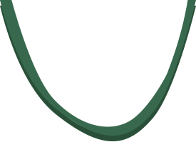
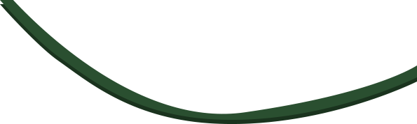
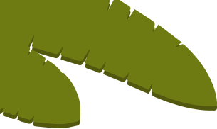
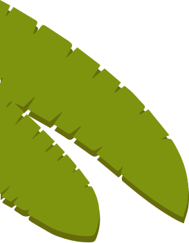
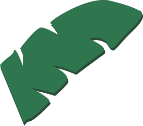
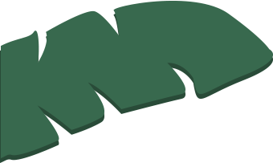
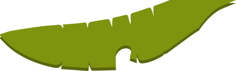
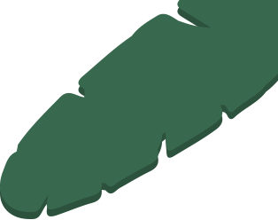
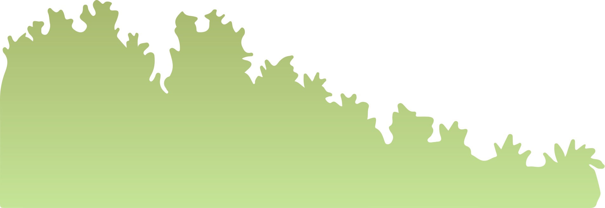

아로와나 Arowana
서식지 : 남미 아마존강
크기 : 최대 1m
온 몸이 은백색의 큰 비늘로 덮여 있으며 매우 측편된 체형을 가진 물고기이다. 체색은 빛의 각도에 따라 은색, 녹색, 분홍색 등으로 빛난다. 평소에는 느긋하게 유영하다가 먹이 사냥을 하거나 흥분하면 대단히 빠르며 수면 위로 점프하기도 한다.
네온 테트라 Neon Tetra
서식지 : 남미 아마존강 상류
크기 : 약 45mm
눈에서 꼬리까지 푸른색 선이 있다. 꼬리의 배쪽은 짙은 홍색이 찬란하여 네온과 비슷하다. 튼튼하여 기르기 쉬우며, 아름답고 성질이 매우 온화하여 작은 물고기와 함께 사육하든가 동종만으로 사육한다. 알맞은 수온은 25℃이다. 또한 무리를 지어서 헤엄치는 습성이 있다.
레몬 테트라 Lemon Tetra
서식지: 남미 아마존강
크기 : 4~5cm
몸빛깔은 연한 노란색 바탕에 연한 검은 풀색이다. 등지느러미와 꼬리지느러미 앞부분이 선명한 레몬빛을 띠며 눈 윗부분이 붉게 물들고 눈이 두드러져 있는 것이 매우 아름답다. 수컷의 색채가 더 아름다운 반면, 암컷이 수컷보다 더 크고 활동적이며 재빠르다. 성질이 매우 온순하여 다른 물고기를 공격하는 일이 절대 없다.
시클라소마세베룸 CichlasomaSeverum
서식지: 남미 기아나, 리오네그로, 아마존강
크기 : 15~20cm
관상용 열대어. 평소에는 아주 온순해서 다른 물고기를 잘 해치지 않으므로 같은 크기의 물고기라면 함께 기를 수 있다. 그러나 성어가 되고 발정기가 되면 약간 난폭해져서 같은 종류라도 작은 것을 못살게 굴기도 하고, 각각 상대를 발견하여 짝을 이루게 되면 서로 커플 이외의 물고기를 쫓아 버리며 공격적이 된다. 매우 성장이 빠른 물고기.
파쿠 Pacu
서식지: 남미 아마존, 오리노코강 유역
크기 : 80cm
Red pacu 또는 콜로소마(Colossoma)로 불리기도 한다. 파쿠로 통칭되는 유사종들이 있으며 분류상 혼선되는 면이 있다. 피라냐(Piranha)와 근연종으로 형태가 유사하나 몸길이가 80cm 내외까지 자라는 대형 담수어이다. 동물성 먹이 뿐 아니라 수초나 수면에 떨어진 단단한 식물의 열매 등도 강한 턱 힘을 이용하여 부수어 먹는 잡식성.
피라루크 Pirarucu
서식지: 남미 아마존강 오리노코강 기아나
크기 : 2~3m
세계 최대의 담수어 중 하나로 알려진 물고기이다. 몸길이 4~5m 또는 그 이상까지 자란다고도 하나 보통 2~3m 내외의 크기가 주로 발견된다. 전체적으로 두꺼운 통나무 형태이며 입과 머리는 위아래로 납작하고 동체의 단면은 둥글지만 꼬리 쪽으로 갈수록 측편된다.
피라냐 Piranhas
서식지: 남미 아마존강 오리노코강 기아나
크기 : 2~3m
피라니아는 원주민어로 이빨이 있는 물고기라는 뜻이다. 아래턱이 매우 발달했고, 삼각형의 날카로운 이빨이 있어 질긴 먹잇감이라도 쉽게 뜯어 먹을 수 있다. 육식성으로 성질이 흉폭하여 하천을 건너는 소나 양 등을 습격하고 무리를 지어 공격해서 뼈와 가죽만 남기고 살은 모두 먹어 치워 버린다
타이거 쇼벨 Tiger Shovel Nose
서식지: 남미 아마존강 오리노코강 파라나강
크기 : 1m 내외
마치 호랑이처럼 검은 세로줄무늬가 산재한 몸에 삽처럼 넙적한 주둥이를 가진 특이한 모양을 지닌 메기로 타이거샤벨노즈캣피쉬 또는 Tiger sorubim이라 불리기도 한다.
오스카 Oscar
서식지: 페루, 콜롬비아, 브라질, 프랑스 기아나, 아마존강
크기 : 약 45cm
어두운 색에 오렌지 링 형태의 점 혹은 홑눈 등이 꼬리자루 및 등지느러미 등에 있다. 상층과 중층 그리고 바닥층까지 활발히 이동하며, 굉장히 활발하다. 잠을 잘때는 사람과 같이 옆으로 누워서 잠을 잔다.
전기뱀장어 Electric eel
서식지: 남미 아마존강, 오리노코강
크기 : 2m
다갈색의 뱀장어. 몸 후반부의 양 옆구리에 2개씩의 발전기관이 있어 650∼850V의 전류를 내뿜는다. 몸에 접촉하면 격렬한 충격을 받게 되며 말 등은 감전사한다고 한다.진흙 바닥의 조용한 물을 좋아해 자주 연안의 평야나 늪, 시냇물 등에서 발견된다.
레드테일 캣피쉬 Red Tail Catfish
서식지: 남미 아마존강, 오리노코강
크기 : 1~1.5m
머리와 등쪽은 짙은 흑갈색이나 복부는 흰색이며 꼬리지느러미는 붉은색을 띠는 것이 특징이다. 머리는 매우 넙적하고 단단하며 입이 크다. 낮에는 주로 바닥의 은신처에 잠복하거나 쉬다가 야간에 섭이 활동이 활발해진다.